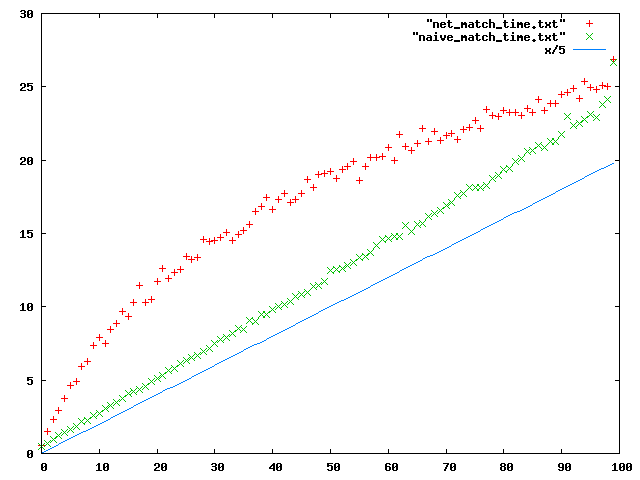

Estos son algunos de los resultados que encontré implementando lo que dice el paper de referencia:
Primero, pueden hechar una mirada al código. No es lindo, posiblemente no sea óptimo, pero quería tener un feel real de qué iba a costar ésto:
El código tiene las siguientes partes:
Un matcher usando la red descripta en el paper
Un matcher naive ( fors anidados )
Un generador de eventos random
Un generador de subscripciones random
Un tester (genera subscripciones, genera eventos y compara el resultado de los dos matchers, por ahora dan siempre lo mismo)
Un medidor de perfomance: Crea un montón (X) de subscripciones al azar y prueba cuantas evaluaciones tiene que hacer para matchear una serie de eventos random (xx) y cuanto tiempo tarda en esto.
Resultados
Este es el plot que compara la cantidad de evaluaciones entre los dos métodos. El eje X es la cantidad de subscripciones x10. Probé de 1 a 1000 subscripciones. El eje Y es la cantidad de comparaciones que se realizaron para ver que subscripciones matcheaban contra 5000 eventos. (la cantidad de eventos no varía para las pruebas, solo la cantidad de subscripciones)
Como pueden ver, la cantidad de matcheos en la red es sub lineal y bastante menos que en el caso naive.
Sin embargo, el problema se da con los tiempos, que no son nada buenos en ninguno de los dos casos.
Conclusiones
Aunque la cantidad de evaluaciones crece de manera sub lineal, el tiempo que toma el algoritmo mas complicado es mayor para una cantidad de subscripciones < 1000.
Aunque vemos que el tiempo del algortimo de red crece menos que el naive, los tiempos son bastante malos. De base estamos viendo un nivel de matcheo de 700/s con 100 subscripciones, 200/s con 1000 subscripciones y 53/s con 10.000 subscripciones.
Para poder soportar miles de usuarios, donde cada evento matchea con solo UNA subscripción (y hay miles de subscripciones, una por usuario) me parece LENTO. No necesariamente el O(), pero si en tiempo total de ejecución.